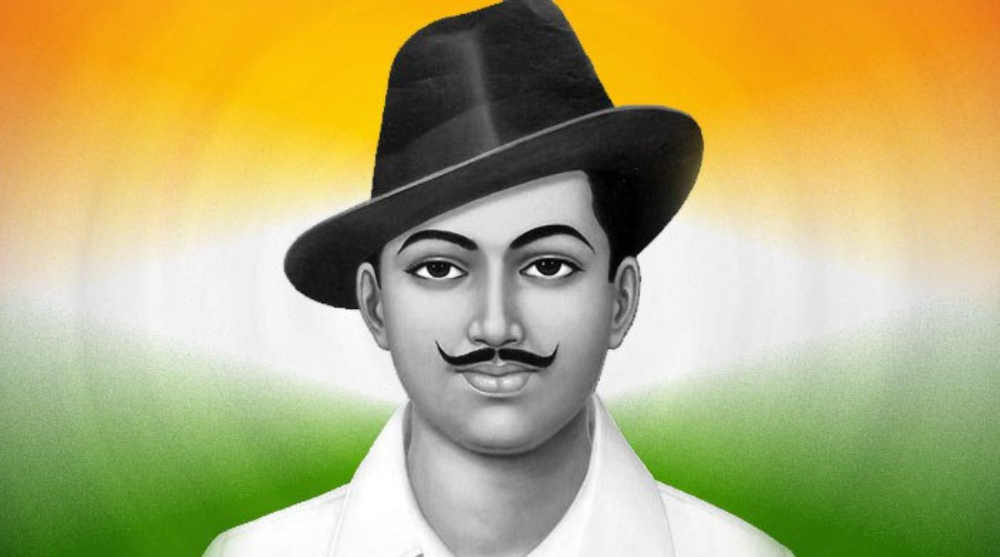

About Bhagat Singh
Bhagat Singh (September 1907 – 23 March 1931) was a charismatic Indian revolutionary who participated in the murder of a junior British police officer and an Indian head constable in mistaken retaliation for the death of an Indian nationalist. He also took part in a largely symbolic bombing of the Central Legislative Assembly in Delhi and a hunger strike in jail, which—on the back of sympathetic coverage in Indian-owned newspapers—turned him into a household name in Punjab region, and after his execution at age 23 into a martyr and folk hero in Northern India. Borrowing ideas from Bolshevism and anarchism, he electrified a growing militancy in India in the 1930s, and prompted urgent introspection within the Indian National Congress's nonviolent and eventually successful campaign for India's independence.
Details Of Bhagat Singh
Born : September 1907 Banga, Punjab, British India (present-day Punjab, Pakistan)
Died : 23 March 1931 (aged 23) Central Gaol, Lahore, Punjab, British India (present-day Punjab, Pakistan)
Cause Of Death : Execution by hanging
Resting Place : Hussainiwala National Martyrs Memorial
Other Names : Shaheed-e-Azam
Notable Work : Why I Am an Atheist
Movement : Indian independence movement
Criminal Charge (s) : Murder of John Saunders and Channan Singh
Criminal Penalty : Capital punishment
Criminal Status : Executed
Parents : Kishan Singh Sandhu (Father) Vidyavati (Mother)
Copyright© Wiki Pedia